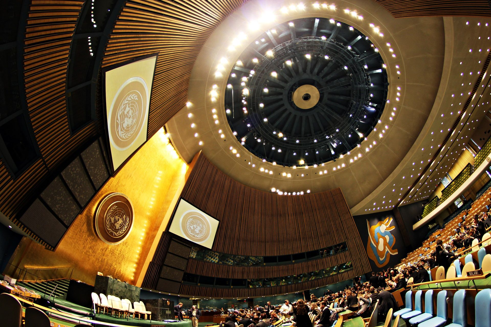

Simulação da conferência de 1945 que redigiu a Carta das Nações Unidas, realizada pelos alunos do Senac Criciúma.

“A ONU não foi criada para levar a humanidade ao céu, mas para salvá-la do inferno.”
Para que ela existe, o que ela substitui e até onde vai a sua autoridade sobre os Estados.
Que instrumentos ela vai ter (mediação, sanções, força militar) e quem decide usá-los.
Quem senta à mesa, quem é permanente e o veto: quem pode, sozinho, barrar uma decisão.
Se entram na Carta, com que peso, e o que fazer quando um Estado os viola dentro das próprias fronteiras.
Durante a sessão, a mesa pode abrir subtópicos a partir do que surgir no plenário.
Guias de posição de cada país participante, com a posição oficial em 1945.